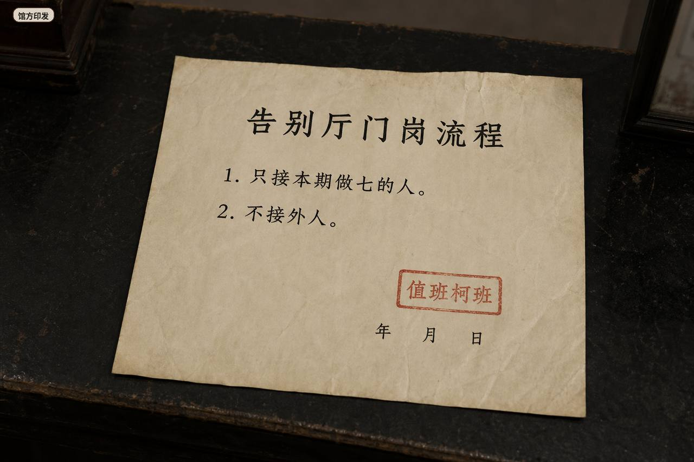
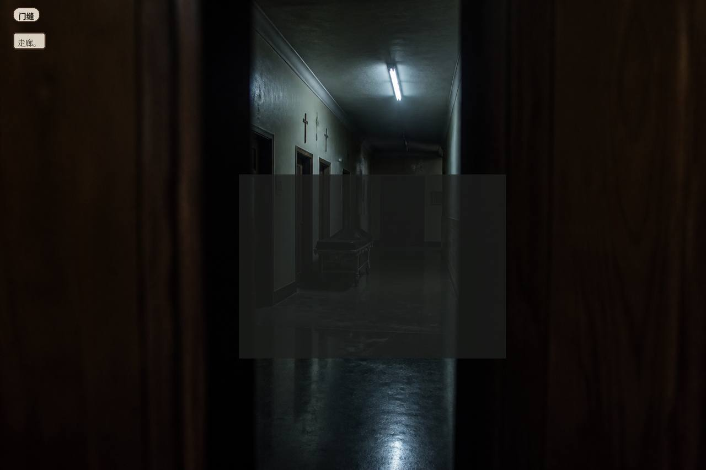

Hall process
This period’s seven only.
No outsiders.

Door desk. Key hook. Hand in before dawn. Broadcast slot empty.
Tonight’s omen governs tonight only. A wrong admission returns.
Shen Wanzha. Woman. Twenty-six. Night door at Liubu funeral hall, temp, third week. Keys before dawn. A complete name list is a valid shift. Pay is by that. Refresh before you hand the keys, the clip stays. Hand them, then refresh, you clock in from the start.
Three issuers laid out. Mark the pair that fights. Group, then rule.

Hall print, typed copy. Farewell-hall door process. 1. Only receive people doing the seven for this period. 2. No outsiders. Stamp: Foreman Ke on duty.
No outsiders. Foreman Ke signed. He changed two characters on this period. Ink still wet. I didn’t ask if he widened it or narrowed it.

Gift ledger. Name / gift money. Wu Chengshan has a line. Uncle Huang does not.
Gift ledger has Wu Chengshan. Uncle Huang has no name. Seam money for night 4 of the seven, ink faint.
Obituary is read-only. Deceased line: Wu Bochuan. The touqi (first seven days) window runs from night 6 to the morning of day 7.
Door desk. Key hook. Hand in before dawn. Broadcast slot empty.
Tonight’s omen governs tonight only. A wrong admission returns.
No one at the door. Hit next night.
No group, no ruling. Broadcast alone is not enough. Door empty, hit next night.
Bag empty
Let in list empty
Refuse refuse empty

Door slit. Corridor.
Door empty, hit next night. Night 3 empty still needs the hit. Incomplete list, don’t hand the keys as This Period.
Foreman Ke’s radio stays on. Pay is by valid shift. Group first, then rule. Corridor talk about returning-soul rusha — he swore, don’t take that as process. Refresh before keys, clip stays. Incomplete keys will not pass as This Period.
Foreman Ke: omen counts tonight only. Group first, then rule. Door empty, hit next night. Hand the keys with an incomplete list, he will not count this shift.